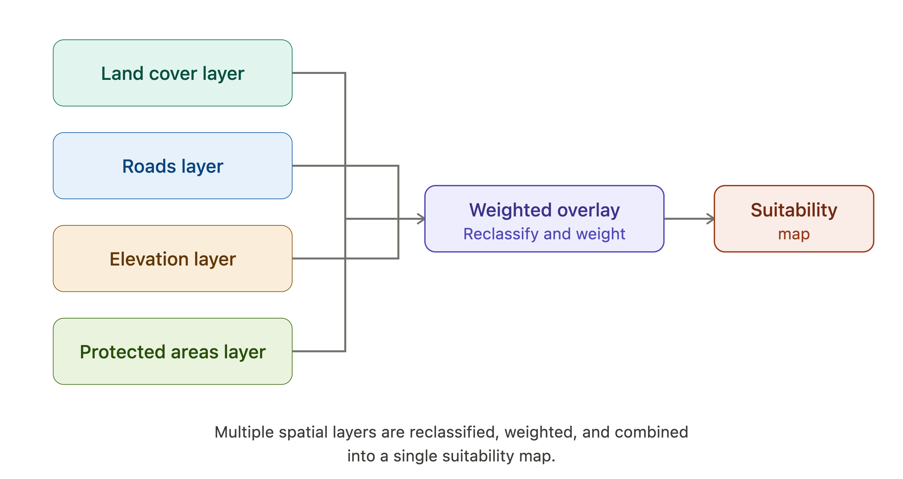
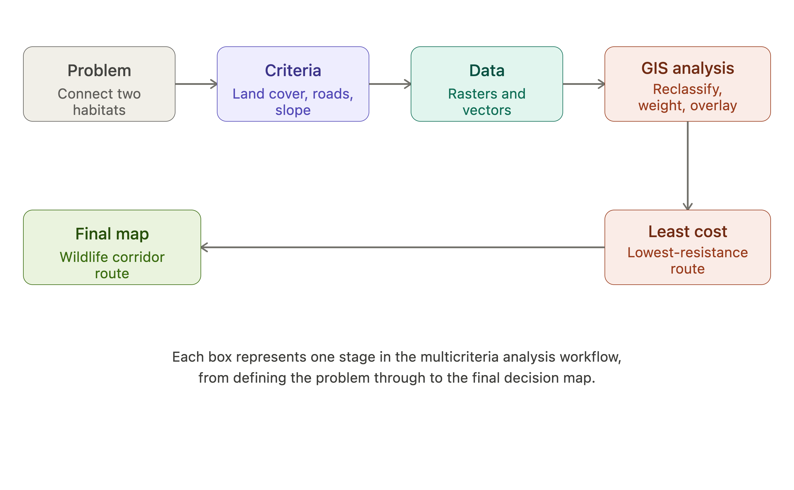

Design of a GIS workflow combining land cover, road proximity, slope, and patch size to identify optimal wildlife corridor routes (SDG 15).
Multicriteria Analysis (MCA) is a decision-making approach used in GIS to combine multiple, often conflicting, factors into a single map or score that helps identify the best locations for a particular purpose. Instead of relying on just one dataset - like elevation, land use, or distance to roads - MCA layers several relevant factors together so that a more complete, realistic picture of "suitability" emerges.
Most real-world environmental and planning problems are too complex to be answered by a single map. For example, deciding where to build a new wildlife corridor is not just about distance - it also depends on land cover, human disturbance, terrain steepness, and existing protected areas. GIS makes MCA possible because it can store, align, and combine many spatial layers (called criteria) at once, weight them according to their importance, and then merge them into a single output map. This process - often involving steps like reclassification, weighting, and overlay - turns a complicated, multi-factor decision into something visual and comparable across an entire study area.
MCA is used across environmental planning and conservation work to answer questions like:
A well-known real-world application is wildlife corridor siting, where researchers use a related method called least-cost path analysis - a close cousin of MCA - to find the route between two habitat areas that minimizes "cost" (e.g. roads, human development, steep terrain) while maximizing safety and habitat quality for moving animals. This kind of GIS-based multicriteria evaluation has been applied directly to siting decisions for transportation corridors and similar linear infrastructure (Aissi, Chakhar, & Mousseau, 2012). Similar approaches have even been used to map cougar dispersal corridors and predict black bear highway crossings in North America, showing how MCA-style thinking directly supports conservation decision-making in practice.

Where should a new wildlife corridor be located to safely connect two fragmented forest habitats, allowing animals to move between them without crossing major roads or developed land?
Habitat fragmentation - caused by roads, agriculture, and urban sprawl - isolates animal populations into smaller patches, reducing genetic diversity and increasing extinction risk. A well-placed corridor restores connectivity, allowing safer movement, gene flow, and access to resources between two habitat patches.
| Criterion | Effect on Suitability |
|---|---|
| Land cover | Forest/natural vegetation increases suitability; urban or agricultural land decreases it |
| Distance from roads | Greater distance from roads increases suitability (less risk of roadkill/disturbance) |
| Slope/elevation | Gentler slopes increase suitability (easier movement for most species) |
| Human population density | Lower density increases suitability (less disturbance/noise) |
| Existing protected areas | Proximity to or overlap with protected land increases suitability |
| River/water proximity | Moderate proximity increases suitability (water access), but floodplain risk may decrease it |
Each of these reflects real factors used in actual corridor studies. For example, researchers modeling black bear corridors in Montana and Idaho used a similar resistance-surface approach, accounting for landscape barriers to identify the safest, lowest-resistance movement paths between habitat areas (Cushman et al., 2015).

Aissi, H., Chakhar, S., & Mousseau, V. (2012). GIS-based multicriteria evaluation approach for corridor siting. Environment and Planning B: Planning and Design, 39(2), 287-307. https://doi.org/10.1068/b37085
Cushman, S. A., Wasserman, T. N., Landguth, E. L., & Shirk, A. J. (2015). Evaluating the intersection of a regional wildlife connectivity network with highways. Forest Ecology and Management, 351, 1-10.